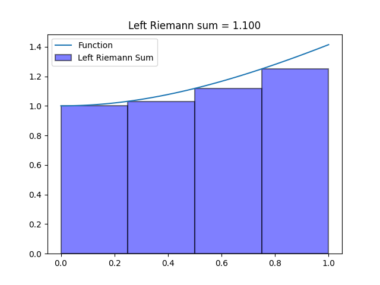
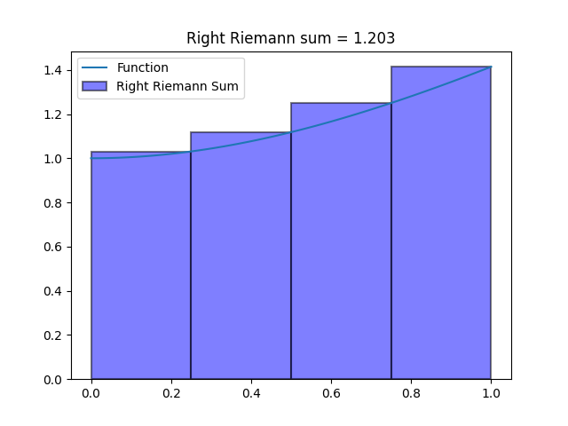
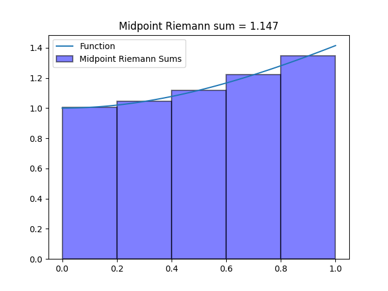
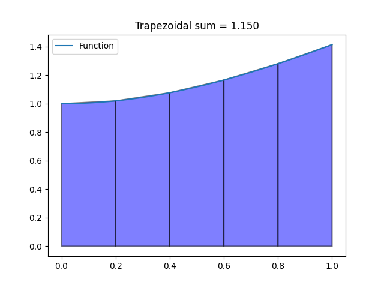
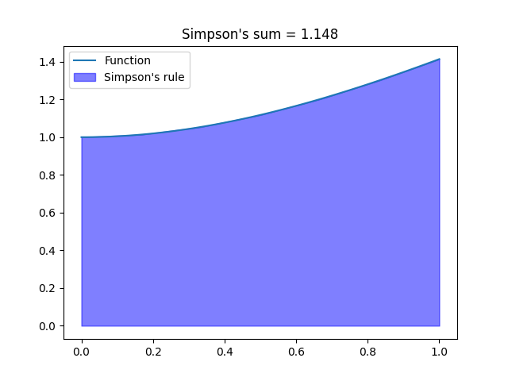

Enter a function to see the approximation!
Functions must be entered in CODING SYNTAX ONLY (√ = sqrt(), multiplication = *)
The following are two problems taken from the textbook.
Left: 0 Right: 7.687 Midpoint: 0.832 Trapezoid: 3.844 Simpson's Rule: 0
Left: 1.116 Right: 2.653 Midpoint: 1.753 Trapezoid: 1.884 Simpson's Rule: 0.704
Left: 1.434 Right: 2.203 Midpoint: 1.785 Trapezoid: 1.818 Simpson's Rule: 1.797
Left: 1.646 Right: 1.954 Midpoint: 1.795 Trapezoid: 1.8 Simpson's Rule: 1.509
Left: 1.72 Right: 1.874 Midpoint: 1.796 Trapezoid: 1.797 Simpson's Rule: 1.796
Left: 1.758 Right: 1.835 Midpoint: 1.796 Trapezoid: 1.797 Simpson's Rule: 1.796
Left: 1 Right: 1.414 Midpoint: 1.118 Trapezoid: 1.207 Simpson's Rule: 0
Left: 1.109 Right: 1.192 Midpoint: 1.147 Trapezoid: 1.15 Simpson's Rule: 0.879
Left: 1.128 Right: 1.169 Midpoint: 1.147 Trapezoid: 1.148 Simpson's Rule: 1.148
Left: 1.14 Right: 1.156 Midpoint: 1.148 Trapezoid: 1.148 Simpson's Rule: 1.092
Left: 1.144 Right: 1.152 Midpoint: 1.148 Trapezoid: 1.148 Simpson's Rule: 1.148
Left: 1.146 Right: 1.15 Midpoint: 1.148 Trapezoid: 1.148 Simpson's Rule: 1.148
There are many strategies for computing the area under the curve of a function numerically. Among these, the most employed techniques include the Left-side Approximation, Right-side Approximation, Midpoint Approximation, Trapezoidal Approximation, and Simpson's Rule. These methods have unique features and are each useful under specific circumstances.
It is important to recognize that no single method solves every problem accurately, as each approach comes with its own set of advantages and disadvantages. The practitioner must take into account the specificities of the function being evaluated when selecting a technique and exercise caution when interpreting the results.
For instance, the Left-side and Right-side Approximations are straightforward and simple to apply, but they can result in either overestimation or underestimation of the integral, depending on the nature of the function being evaluated.


The Midpoint Approximation, on the other hand, is more accurate for functions with steep gradients, but it can still be imprecise when dealing with non-smooth points.

Moving on to the Trapezoidal Approximation, this method is a more advanced approach than either the Left-side or Right-side Approximations. It is much easier to implement than other applications, but it can also be imprecise when dealing with non-smooth points.

Finally, Simpson's Rule is the most accurate of the methods, with the added benefit of being more precise for a broader range of functions. Nevertheless, this comes at the expense of increased computational complexity and resource consumption.

The choice of method for calculating the area under the curve of a function requires careful consideration of the function being evaluated and the specific circumstances in which the method is being used. While each of the techniques discussed here has its own advantages and disadvantages, the ultimate goal is to ensure that the results obtained are both accurate and meaningful.
Python and JavaScript are two of the most popular programming languages that offer a wide range of tools and libraries for performing complex mathematical calculations. Among these, the most powerful library for mathematical programming in Python is NumPy, which provides an set of tools for working with arrays, matrices, and other numerical data structures. With NumPy, users can perform complex operations on large datasets with just a few lines of code, making it a popular choice for data scientists and researchers.
JavaScript, however, offers the Math library, which provides a set of basic mathematical functions such as trigonometric, logarithmic, and exponential functions, as well as basic arithmetic operations. While these two libraries have similar applications, the Math library in JavaScript lacks the more advanced array manipulation and broadcasting capabilities of NumPy, making it more suitable for simpler tasks and basic arithmetic operations.
One of the key differences between NumPy and Math is their approach to arrays. NumPy provides a broad range of functions for performing operations on arrays, such as element-wise addition, subtraction, multiplication, and division, as well as more complex operations like matrix multiplication and dot products. NumPy's broadcasting feature allows for operations to be performed on arrays of different shapes and sizes, as long as they are compatible, making it easier to perform complex operations on large datasets without the need for explicit loops.
In contrast, the Math library in JavaScript mainly deals with single values and provides functions for basic arithmetic operations like addition, subtraction, multiplication, and division. While it does offer some more advanced functions like trigonometric and exponential functions, it lacks the array manipulation and broadcasting capabilities of NumPy, making it less suited for complex mathematical tasks.
As a result, JavaScript developers often need to use additional libraries or write custom code to perform complex mathematical operations on arrays. While NumPy may require more computational resources and memory, its powerful capabilities make it a popular choice for data analysis, scientific computing, and other applications that involve complex mathematical calculations.
Both Python and JavaScript offer powerful tools for mathematical programming, but the NumPy library in Python is better suited for complex mathematical tasks involving arrays and large datasets, while the Math library in JavaScript is more appropriate for simpler tasks and basic arithmetic operations. The choice of programming language and library depends on the specific requirements of the task at hand, as well as the resources available to the developer.
Stewart, James. Calculus: Early Transcentals, 8th Ed.
Burden, R. L., & Faires, J. D. (2010). Numerical analysis (9th ed.). Brooks/Cole.
Travis E, Oliphant. A guide to NumPy. USA: Trelgol Publishing, 2006. Available at: numpy.org
Mozilla Contributors. Math. Mozilla Developer Network, 2021. Available at: developer.mozilla.org